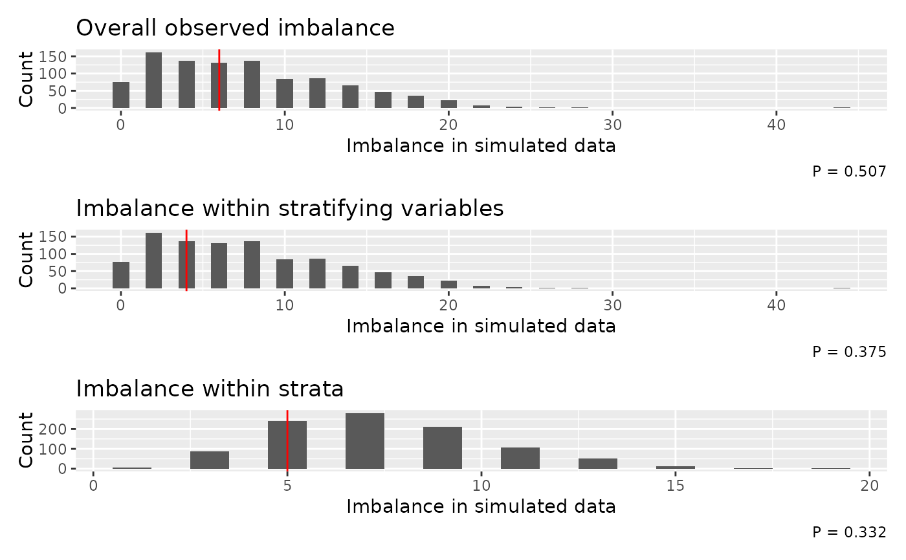

Plot imbalance and simulation and test results
imbalance_test_plot.RdPlot histograms of imbalance values from simulation results and a vertical lines to indicate the observed imbalance for each randomisation level (overall, stratification variable level, and strata level, where appropriate). The p-values from the tests are included in the figure captions.
Arguments
- test
imbalance_testobject- vline_col
colour for the vertical line indicating the observed imbalance
- stack
logical, whether to use
patchwork::wrap_plotsto stack the plots in one column (TRUE) or return a list of ggplot objects (FALSE)
Examples
# example code
data(rando_balance)
# without stratification variables
imb <- imbalance_test(rando_balance, "rando_res2", stratavars = c("strat1", "strat2"))
#> assuming balanced randomisation between arms
#> Simulating randomisations ■■■■■■ 17% | ETA: 11s
#> Simulating randomisations ■■■■■■■■■■■■■■■■■■■■ 63% | ETA: 5s
#> Simulating randomisations ■■■■■■■■■■■■■■■■■■■■■■■■■■■ 86% | ETA: 2s
imbalance_test_plot(imb)
